6.810 Engineering Interactive Technologies (fall 2018)
How to Find Research Projects
Upload (Oct 19, 1pm):
Fill out this Google Form.
work in progress, Stefanie is still updating please wait until piazza announcement
Goal
We are going to show you how you can find the latest HCI research projects yourself so when class is over you still know how to stay up to date.
ACM UIST 2018 Conference
This week, most of the teaching team is at the ACM UIST 2018 conference.
The top conference in HCI are ACM CHI (ca. 3000 attendees, everything from usability studies to augmented reality devices) and ACM UIST (technical HCI research, most of the stuff you see in class is from the UIST conference).
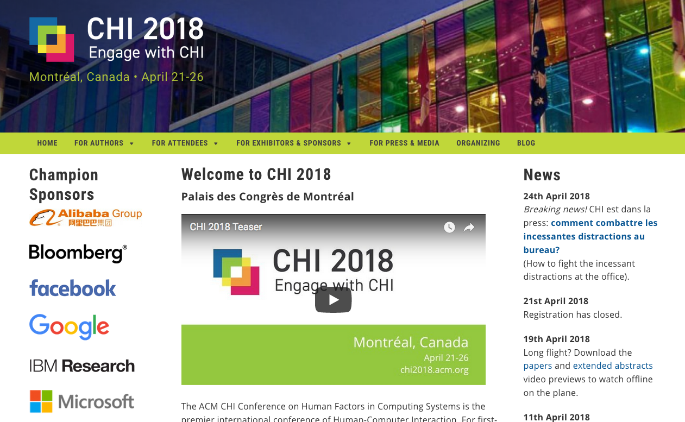
Find your favorite 5 research projects from ACM UIST 2018
The first part of your homework in the google form asks you to find your favorite 5 research projects from UIST this year
.
A good way to get started is to checkout the conference website: http://confer.csail.mit.edu/uist2018/schedule
For each session you can see the paper titles + authors.
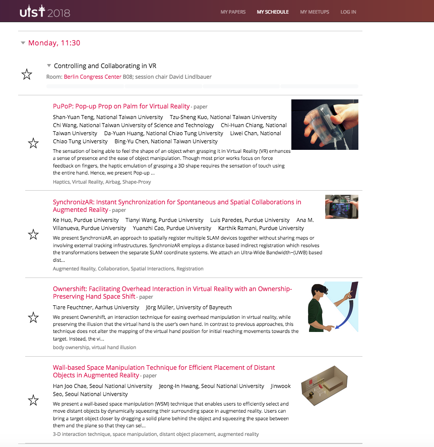
If you click on a paper, you can even get a 30 second video preview.
We recommend watching a bunch for these 30 second videos and then deciding on your top 5.
Paste the paper title + author list into the google form.
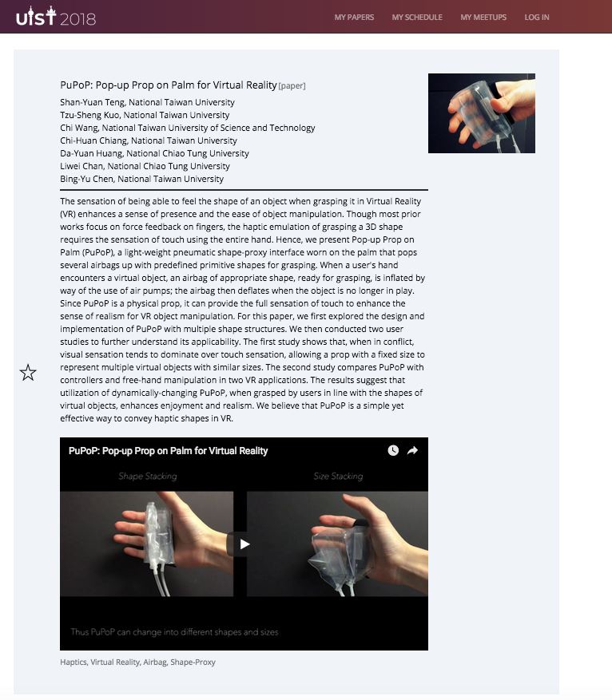
Select your favorite project out of the five
Next, select one of the five projects that has both software + hardware components. You are going to do a more in-depth search for this one next. Add your choice to the google form.
Finding References your Paper Cites
Next, we are going to look up this paper in the ACM Digital Library.
The Association for Computing Machinery (ACM) collects paper pdfs for all the major ACM conferences (including ACM UIST).
Go to ACM Digital Library and type in the paper title in the search bar. Alternatively, you can just google the paper title and add 'acm' to the search (that's what I typically do).
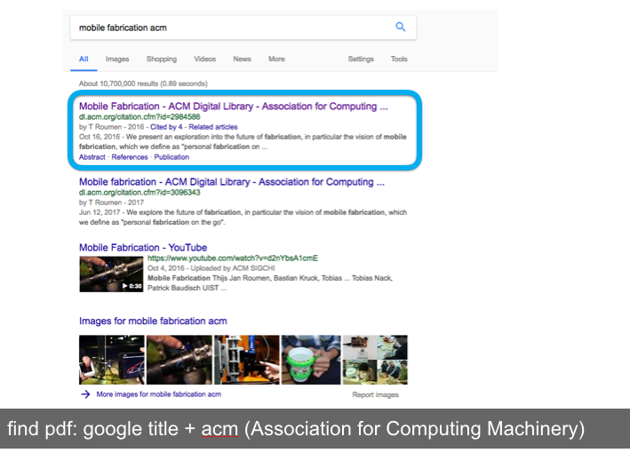
This should get you to a page that looks like this:
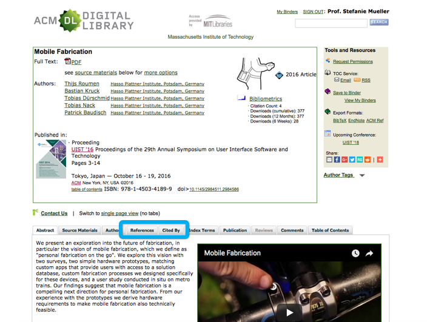
As you can see in the image above, there are two tabs called 'References' (everything older than the paper you are looking at) and 'Cited By' (everything newer than the paper you are looking at). Since your paper was just published 'Cited By' will probably be empty.
If you click on "References" you will get to a page that has links to all the work that was cited by your paper. Again you can click on those and look at the papers if you want.
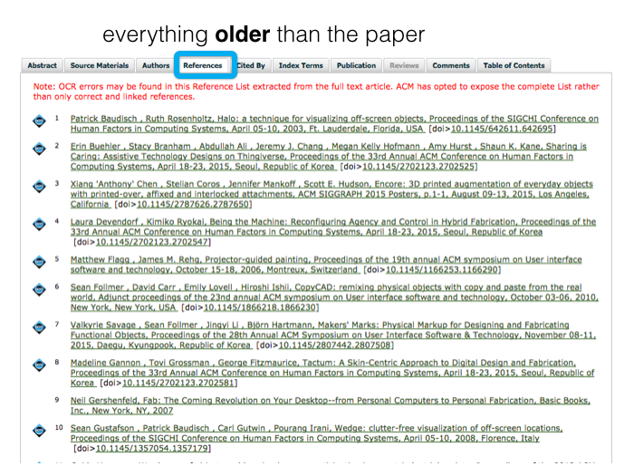
Find two references that are closely related and paste them into the google form.
Find other Papers from this Author
PhD students (typically the first author) work in the same topic area for ca. 5 years, thus if you like one project from this student you might like other projects as well. Similarly, advisors (typically the last author on the paper) work in roughly the same research area with their entire group. Thus, if you find one paper on Augmented Reality and you look up the last author, you will find more augmented reality papers.
You can look up other papers from an author by clicking on their name:
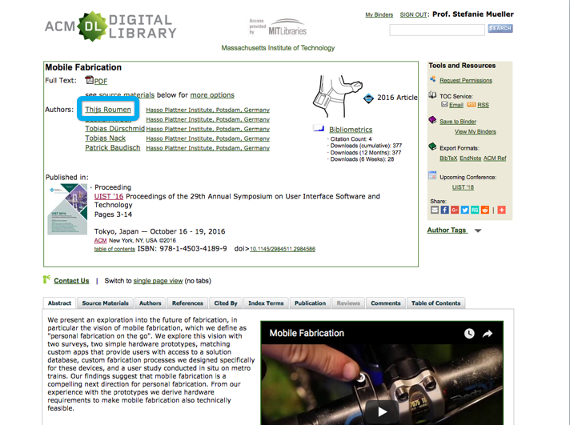
Alternatively, you can also search for them on google scholar:
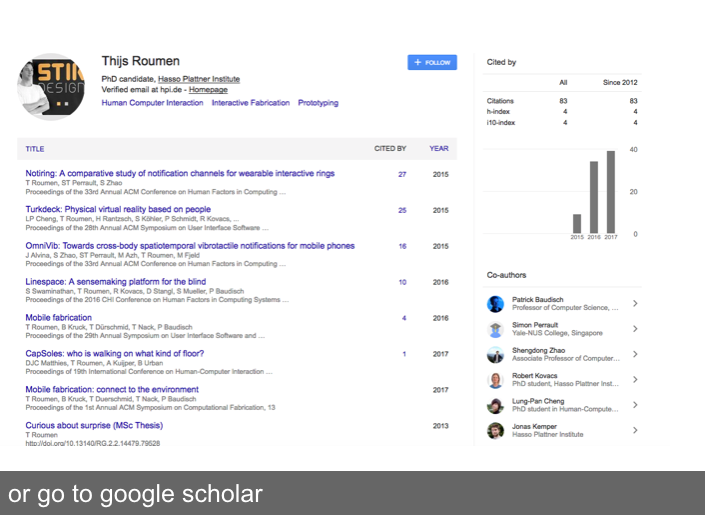
Or check out the authors website:
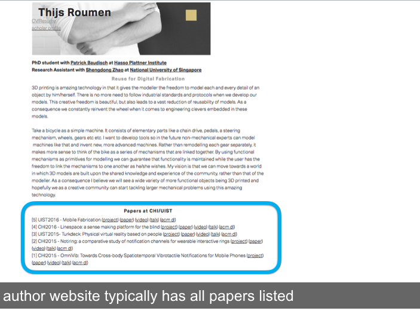
Add two other papers from either the first or last author of your paper to the google form you are filling out for your homework.
Getting the Full paper PDF
You can also download the full paper pdf from the ACM DL.
Please make sure you are on campus on the MIT network to do this, otherwise you need a membership.
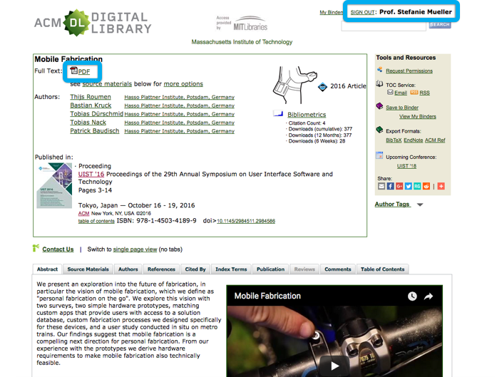
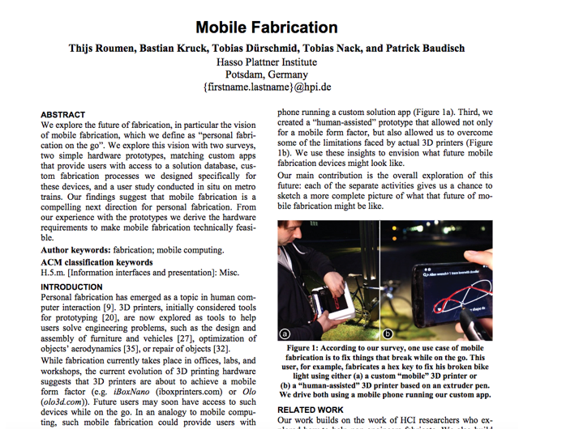
Please fill out the remaining questions in the google form.
In particular, if you think this research project could be modulated to become an in-class exercise next year, please let us know.
Google Form.
- Describe what the main _technical_ invention of the work is.
- Describe how the technology works:
- Do you think this paper is suitable for an in-class exercise next year?
- How much would it cost to build it yourself? make a list of components you can buy online (with link + price).
- How much time do you think it would take you to build it yourself? Which components would take longest?
- What are limitations of the proposed work? When would it break or not work? *
- What would you do as future work based on what you learned? Any follow up inventions or ideas you can come up with?